브레인스토밍 정리본 · KOL 파트 + 롯데시네마 오프라인 이벤트 파트
버전 3.6은 "기존 팬덤 결속 + 라이트 유저 유입"을 동시에 노리는 구성. 성우 토크쇼(팬덤 심화) → 영입회(신규 유입) → 애니메이션(대중 확산) → 델크쇼(밈 확산)로 타깃이 점점 넓어지는 퍼널 구조로 설계했습니다.
캐릭터를 연기한 성우가 직접 나와 녹음 비하인드를 푸는, 팬덤 만족도 최상위 콘텐츠
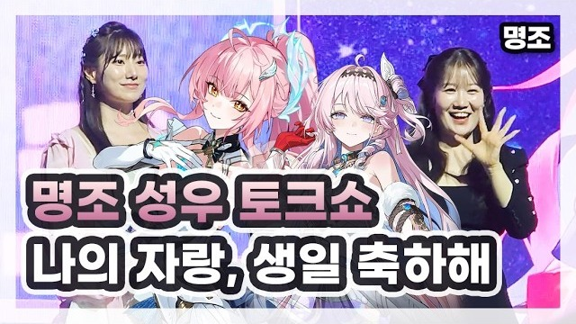
| 포맷 | 온라인 라이브 1회 (약 90~120분) + 하이라이트 VOD 1건 |
| 출연 | 성우 2~3인 + 진행 MC 1인 (명조 이해도 높은 크리에이터) |
| 송출 | 명조 공식 채널 (치지직) 메인 / MC 개인 채널 동시 송출 |
| 타깃 | 기존 유저 · 성우 팬덤 · 스토리 중심 라이트 유저 |
명조를 안 하는 크리에이터/시청자를 대상으로 한, 웃기고 뜨거운 ‘게임 영업’ 콘텐츠
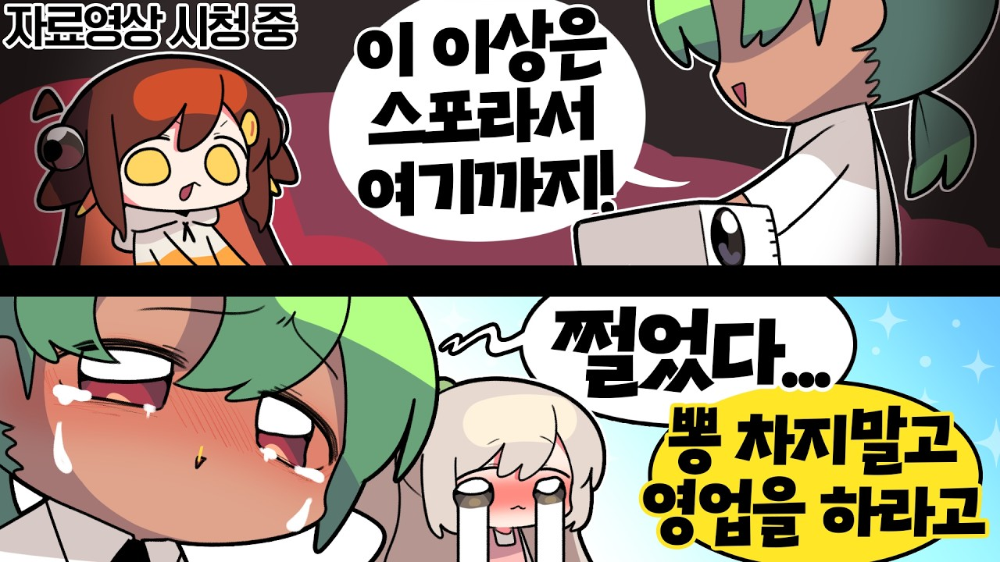
| 포맷 | 온라인 라이브 1회 (약 120분), PPT 발표 배틀 형식 |
| 출연 | 영업자(명조 헤비 유저) 2~3인 + 피영업자(비유저·복귀 유저) 2~3인 |
| 캐스팅 | 영업자 — 명조 이해도 최상위 / 피영업자 — 타 게임 팬덤 보유 크리에이터 |
| 핵심 KPI | 방송 중/후 신규 가입 쿠폰 코드 사용률로 전환 측정 |
픽셀 멤버 5인이 3.6 신규 공명자 청초의 제자가 되기 위해 고군분투하는 오리지널 2D 애니메이션 제작. 기존 영상 재활용이 아닌 신규 IP 콘텐츠 자체 생산
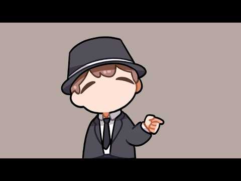
| 출연 | 픽셀 멤버 5인 — 남봉 · 임나은 · 연비니 · 금사향 · 설백 |
| 소재 | 3.6 신규 공명자 청초 (심검 사용 검술 캐릭터) |
| 줄거리 | 픽셀 멤버들이 청초의 제자가 되기 위해 각자의 방식으로 노력하는 과정 |
| 화풍 | 2~3등신 치비 + 굵은 라인아트 + 플랫 컬러 (픽셀 기존 애니 시리즈 톤 유지) |
| 분량 | 3~5분 1편 (기존 「@애니메이션」 시리즈가 3분 내외) |
| 송출 | 픽셀 채널 메인 업로드 + 명조 공식 채널 리포스트 |
| 멤버 | 제자 지원 방식 (안) | 기대 포인트 |
|---|---|---|
| 남봉 | 정공법 — 실제로 검술을 파고들어 가장 진지하게 수련 | 띵킹 띵티어 캐스팅과 연결되는 “실력파” 포지션 |
| 임나은 | 아부·아첨형 — 청초 찬양으로 환심 사기 시도 | 대사량 많은 코미디 구간, 클립 확산 최적 |
| 연비니 | 모방형 — 청초 말투·복장·자세를 그대로 따라함 | 코스프레 · 2차 창작 유도 |
| 금사향 | 정면 돌파 — 대련 신청 후 순식간에 패배 | 심검 액션 작화를 보여주는 구간 |
| 설백 | 의외의 재능 — 무심하게 따라했는데 성공 | 결말 반전 담당 — 마지막 한 방 |
※ 멤버별 실제 캐릭터성은 픽셀 측과 협의 후 확정. 위는 배치 구조 예시안입니다.
기존 인기 토크쇼 포맷에 명조를 얹는 방식. 이미 검증된 재미 — 리스크가 가장 낮은 카드
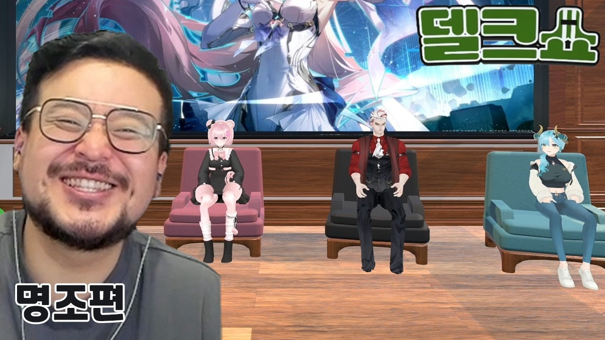
| 포맷 | 토크쇼 1회 (약 120~150분) + 클립 3~5건 |
| 출연 | 호스트 1인 + 게스트 3~4인 (명조 크리에이터 + 외부 게스트 혼합) |
| 차별점 | 1회차 대비 3.6 신규 콘텐츠 기반 코너를 신설해 반복감 제거 |
| 타깃 | 토크쇼 고정 시청층 · 라이트 유저 · 커뮤니티 유저 |
구독자 146만 · 영상 1,970개의 대형 게임 채널. 2026년 7월 전역과 동시에 채널 복귀 — 복귀 직후 주목도가 최고조인 시점에 과업을 배치해 평시 대비 높은 조회 지표를 확보하는 안
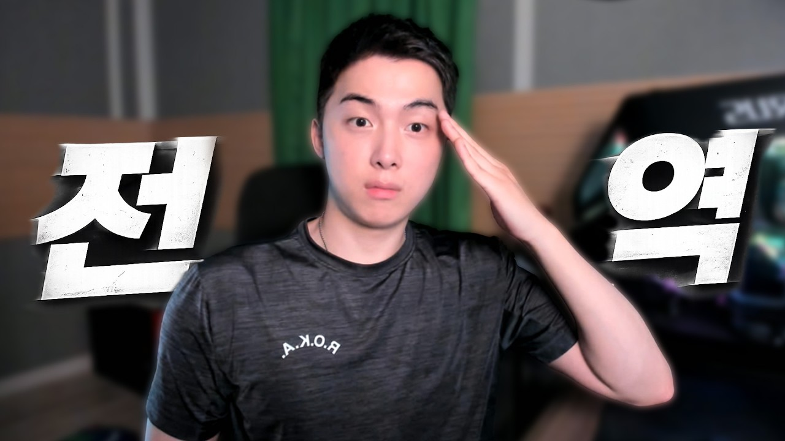
| 채널 규모 | 구독자 146만 · 영상 1,970개 (게임방송 전문) |
| 복귀 시점 | 「뜨뜨뜨뜨 전역」 업로드 — 복귀 직후 (선점 필요) |
| 제안 포맷 | 명조 첫 접촉 플레이 영상 1건 + 라이브 1회 |
| 컨셉 | 「1년 만에 전역하니 이런 게임이 나왔다」 — 공백기 서사 활용 |
| 핵심 KPI | 복귀 버프 구간 조회수 · 신규 설치 전환 (전용 쿠폰코드) |
3.7은 "제작 과정 공개 + 크리에이터 심화 협업"이 축. 드로잉(제작 감성) → 본사 방문(개발사 신뢰) → 띵킹2(경쟁 화력)로, 버전 초반·중반·후반을 각각 담당하는 3단 구성입니다.
「냉장고를 부탁해」 패러디 — 랜덤 재료(룰렛)로 즉석 캐릭터 일러스트 대결
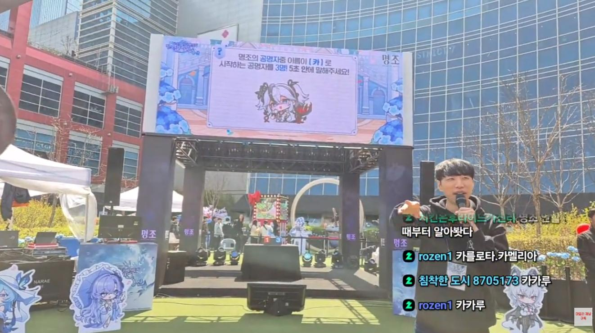
| 콘텐츠명 | 명조 드로잉 키친 (냉장고를 부탁해 패러디) |
| 출연 | 진행 MC 2인 (명조 크리에이터) + 셰프 2인 (일러스트 작가) |
| 온라인안 | 각 크리에이터 채널 동시 송출 / 디스코드 화면공유 활용 |
| 오프라인안 | LED 3면 + 카메라 3대 + 지미집, 드로잉 테이블·태블릿 세팅 |
| 제한시간 | 드로잉 10분 / 5~7분 경과 시 히든 재료 투입 |
크리에이터가 직접 기획·제안한 콘텐츠. 온라인 토크쇼(1부) → 쿠로게임즈 본사 방문(2부) 2단 구성
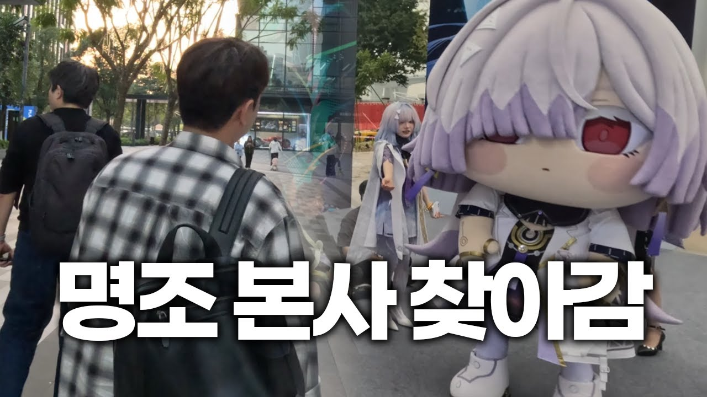
| 구분 | 1부 · 온라인 | 2부 · 오프라인 |
|---|---|---|
| 콘텐츠명 | 너만의 명조를 해 (너명해) | 명조 중국 본사 방문 Vlog |
| 형태 | 합방 토크쇼 (라이브) | 영상 촬영 후 VOD 제작 (라이브 없음) |
| 컨셉 | 명조 TF팀 사내 회의 | 명조 TF팀 해외 출장 |
| 출연 | 팀장 다주 / 선임 서넹 / 신입 채현찌 + 추가 인원 | |
| 송출 | 참여 크리에이터 치지직 채널 / 유튜브 VOD | |
| No | 토크 주제 | 주제 의도 |
|---|---|---|
| 1 | 명조의 정실(최애) 캐릭터는? | 캐릭터 선호도 비교 · 팬덤 과몰입 토론 |
| 2 | 명조 내 외모 순위 TOP3 | 그래픽 · 비주얼 매력 조명 |
| 3 | 여랑자 vs 남랑자 | 플레이 취향 비교 |
| 4 | 세계관 속 가장 불쌍한 캐릭터 | 캐릭터 · 스토리 흥미 유발 |
| 5 | 명조 내 비호감 순위 TOP3 | 캐릭터 · 스토리 흥미 유발 |
| 6 | 가장 좋아하는 지역 / 스토리 | 스토리 흥미 유발 |
※ 콘텐츠 후반부에 본사에 들고 갈 최종 안건을 시청자와 함께 작성하며 마무리 → 2부로 연결
2부 — 본사 방문 구성스토리로 주목받은 명조의 액션성을 정면으로 보여주는 대규모 대회. 인플루언서와 유저가 함께 즐기는 참여 공간
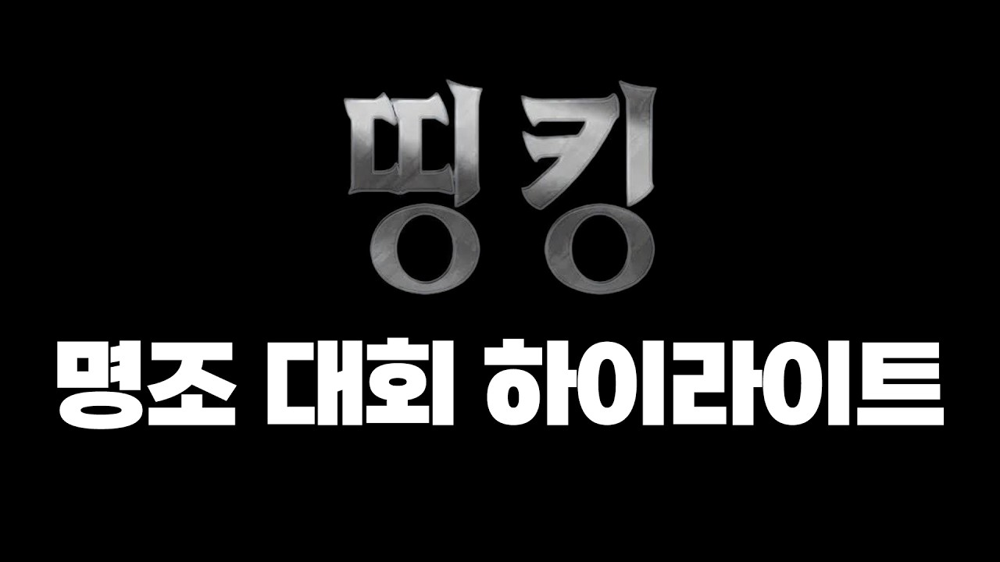
| 컨셉 | 명조 특유의 전투 시스템과 공명자 이해도를 활용한 전략형 경쟁 대회 |
| 중계진 | 3인 — 앙리형, 황블린, KOL(다주) |
| 참가자 | 5~6팀 × 3인 = 최대 18인 |
| 팀 구성 | 팀장 1인 + 띵티어 1인 + 킹티어 1인 |
| 방송 | 공식 방송 2회 (DAY1 팀 선정 2시간 / DAY2 본선 3시간) |
| 예상 뷰어십 | ACCU 16,400 / PCCU 24,000 (6팀 18인 기준, 공식+참가자 합산) |
| 역할 | 출연자(안) | 기준 |
|---|---|---|
| 팀장 | 명떡, 고뇨, 매드라이프, 닝냉뇽 등 5~6인 | 최상위 난이도 콘텐츠 클리어 경험 보유 |
| 띵티어 | 박서림, 김츠유, 관종대왕, 남봉 등 5~6인 | 전투 콘텐츠를 자주 플레이하는 스트리머 |
| 킹티어 | 아라하시 타비, 유즈하 리코, 초승달, 탬탬버린 등 5~6인 | 전투 콘텐츠에 익숙하지 않은 스트리머 |
※ 킹티어에 탬탬버린이 포함 — 3.6 영입회 출연자와 겹치면 "영업당해서 대회까지 나왔다"는 서사 연결이 가능. 캐스팅 시 의도적으로 활용 권장.
진행 구성스텔라이브 멤버들이 명조를 플레이하며 나온 재미있는 장면 클립을 한 편으로 편집한 컴필레이션 영상. 중국어 제목 「黑潮预警！[StelLive高光时刻]」 병기로 글로벌 확산 고려
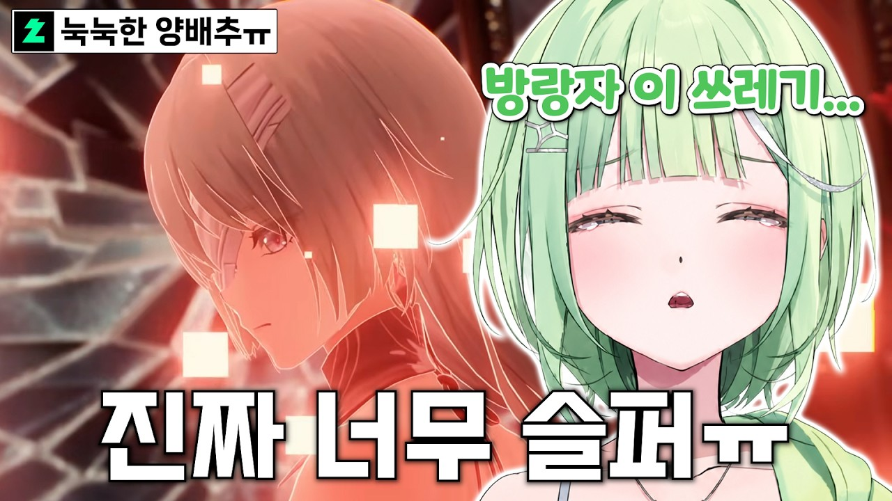
| 콘텐츠명 | 흑조 주의보! [스텔라 핫클립] / 黑潮预警！[StelLive高光时刻] |
| 포맷 | 클립 컴필레이션 1편 (8~10분) — 기존 핫클립 분량 기준 |
| 출연 | 스텔라이브 멤버 (유즈하 리코 · 아라하시 타비 · 아이리 칸나 등) |
| 송출 | 스텔라이브 공식 채널 (구독자 35.6만) + 명조 공식 리포스트 |
| 제작 방식 | 기존 방송 클립 편집 — 신규 촬영 불필요 |
| 자막 | 한국어 기본 + 중국어 자막 병행 (글로벌 확산 목적) |
| 클립 | 채널 | 포인트 |
|---|---|---|
| 플로로 스토리 보고 우는 리코 | 별라떼 | 감정 반응 — 스토리 몰입도를 보여주는 구간 |
| 최애 토론 중 파수인 논쟁 (타비·히나·리코) | 스텔나스_팬채널 | 다인 합방 — 캐릭터 애착 · 토론 재미 |
| 엘리시움 애니 PV 보는 리코 | 스텔나스_팬채널 | 공식 PV 리액션 — 홍보 자산 자연 노출 |
| 히나가 명조에 현질하는 방법 | 스텔 한 잔 | 과금 개그 — 밈 확산성 최상 |
| 지하철에서 명조 보며 우는 사람 | 인생이 Cliche | 일상 밈 — 짧고 강한 클립 |
명조 관계자와 함께 3.7 버전 라이브를 단체 관람하고, 사인회 · 코스어 · 인형탈 · 성우 토크쇼 · 럭키드로우 · 굿즈 증정을 결합한 Before / LIVE / After 3단 구성.
3개관 동시 오픈 · 로테이션 방식 운영
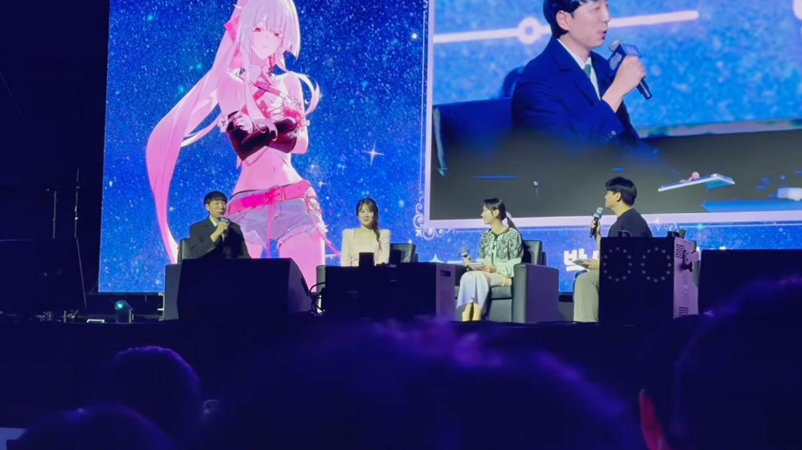
| 행사명 | 명조 X 롯데시네마 콜라보 — before LIVE, after LIVE |
| 장소 | 롯데시네마 월드타워점 (서울 송파구 올림픽로 300, 롯데월드몰 5-11층) |
| 일시 | 26/09/19 |
| 규모 | 3개관 × 300석 = 900명 / 운영시간 140분 |
| 예약 | 네이버 예약 시스템 활용 |
| 구분 | 프로그램 | 소요시간 | 비고 |
|---|---|---|---|
| BEFORE LIVE | 웰컴 메시지 (영상 루프) | 20분 | 전관 동시 송출 |
| 사전투표 / 설문조사 | 동시 진행 | ||
| 카운트다운 | 10초 | 전체 카운트다운 | |
| LIVE | 3.7 업데이트 라이브 단체관람 | 60분 | 실제 라이브에 맞춰 변동 |
| AFTER LIVE | 드로잉쇼 | 20분 | 3개관 로테이션 |
| 성우 토크쇼 | 20분 | ||
| 퀴즈쇼 | 20분 | ||
| 럭키드로우 | 5분 | 각 관 마지막 프로그램과 함께 |
| Time | 1관 | 2관 | 3관 |
|---|---|---|---|
| 1회차 | 드로잉쇼 | 성우 토크쇼 | 퀴즈쇼 |
| 2회차 | 퀴즈쇼 | 드로잉쇼 | 성우 토크쇼 |
| 3회차 | 성우 토크쇼 → 럭키드로우 | 퀴즈쇼 → 럭키드로우 | 드로잉쇼 → 럭키드로우 |
| 진행자 | 황블린 | 앙리형 | 샘웨 |
| 내용 | 행사 시작 전 사전 영상(웰컴 메시지) 루프 + 공식 방송 시작 전 10초 카운트다운 |
| 구성 | 행사 타이틀 및 시작 시간 안내 / 관람 에티켓 / 성우 · KOL 축하 메시지 / 전용 웰컴 영상 / 사전 참여 프로그램 QR |
| 웰컴기프트 | 각 좌석 배치 — 웰컴백(종이가방), 엽서, 아크릴 티켓, 캐릭터 쿠키 |
| 방식 | 루프 영상 내 투표 페이지 랜딩 QR 노출 → 버전 관련 주제 투표·설문 실시 |
| 주제 | 3.7 업데이트에서 가장 기대되는 요소 / 즐기고 싶은 행사 / 명조에 바라는 점 / AFTER LIVE 관련 퀴즈 |
| 추첨 | 일반 설문 — 행사 종료 후 추첨 / AFTER LIVE 퀴즈 — 현장 추첨·선물 증정 |
| 방식 | 전문 일러스트레이터가 명조 캐릭터를 현장에서 실시간 드로잉 / 드로잉 과정 중 유저와 소통하여 반영 |
| 경품 | 현장 드로잉 제작물로 만든 굿즈 |
| 방식 | 명조 성우 출연 → 작품·캐릭터 이야기 / 현장 관람객과 함께하는 토크 및 Q&A |
| 구성 | 캐릭터 비하인드 스토리 / 녹음 에피소드 / 현장 Q&A / 인사 및 특별 멘트 |
| 퀴즈쇼 | MC 진행 하에 3.7 라이브에 포함된 내용 기반 퀴즈 실시 / 한정판 경품으로 참여 유도 |
| 럭키드로우 | 사전 예약번호 또는 입장 시 배부한 응모번호로 추첨 / 당첨자에게 한정 굿즈 증정 |
운영기획안 1차 확정 후 전용 F&B 판매 롯데시네마 협의 필요. 판매 불가 시 웰컴기프트로 먹거리 배포.
기존 기획안에 미반영된 항목. 아래와 같이 배치 제안
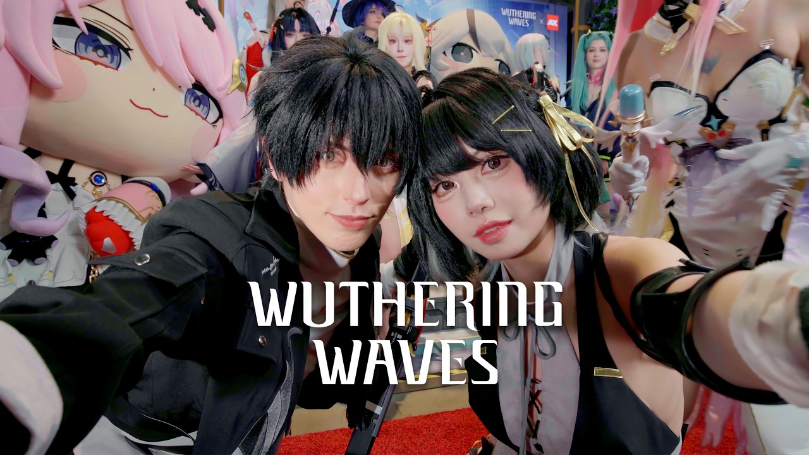
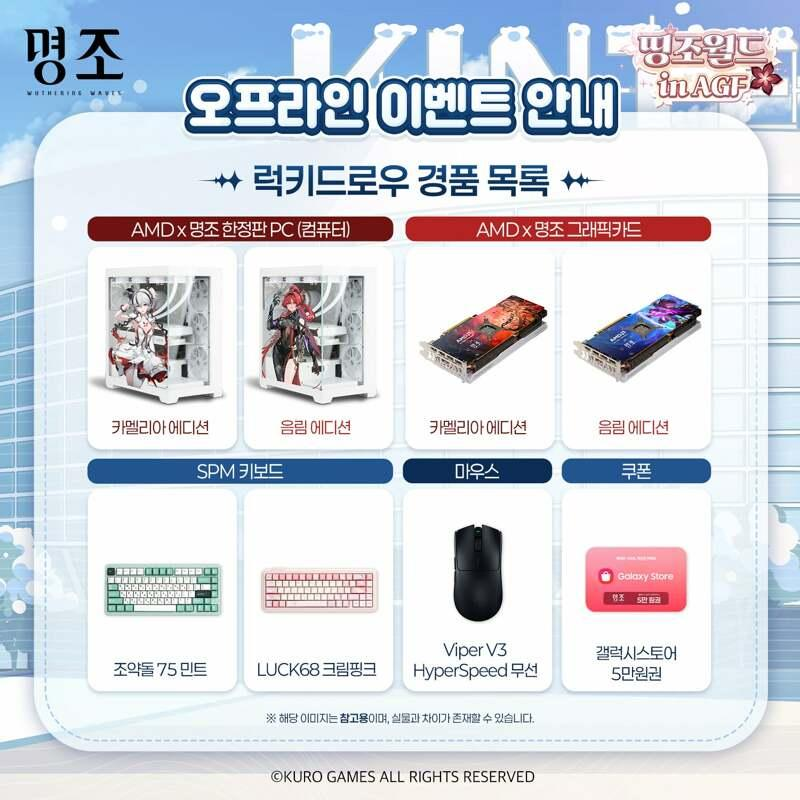
| 항목 | 배치 위치 | 운영 방식 |
|---|---|---|
| 사인회 | AFTER LIVE 종료 후 로비 | 성우 · 명조 관계자 참여. 럭키드로우 당첨자 한정(관당 20~30명)으로 인원 통제 — 900명 전체 대상은 물리적으로 불가 |
| 여우의 별자리 코스어 | 로비 포토존 / 입장 동선 | 입장 시간대(BEFORE LIVE 전) 집중 배치. 포토타임 운영 — SNS 확산 자산 |
| 쇄명 코스어 | 로비 포토존 / 무대 등장 | AFTER LIVE 오프닝에 짧게 무대 등장 → 관람객 환호 유도 후 로비 포토존 이동 |
| 인형탈 | 입장 동선 · 로비 상시 | 전 연령 소구 · 대기시간 체감 완화. 2인 1조 교대 운영(체력 이슈) 및 케어 스태프 필수 |
3.6이 “라이브를 같이 보는 행사”였다면, 3.7은 “극장이라는 공간을 게임 콘텐츠로 바꾸는 행사”로 차별화. 같은 포맷 반복 시 재방문 동기가 떨어지므로, 극장에서만 가능한 경험에 집중했습니다.
| 구분 | 3.6 (기존) | 3.7 (제안) |
|---|---|---|
| 핵심 경험 | 라이브 단체 관람 (수동적 시청) | 극장 스크린 참여형 플레이 (능동적 참여) |
| 스크린 활용 | 방송 송출용 화면 | 거대 게임 화면 · 인터랙티브 매체 |
| 관객 역할 | 관람객 | 참가자 · 플레이어 |
| 주 소구층 | 기존 유저 (라이브 시청 목적) | 기존 + 동반 참여자(친구·가족) |
| 확산 축 | 라이브 동시 시청 화제성 | 현장 영상·짤 중심 SNS 확산 |
극장 스크린을 대형 게임 화면으로 전환. 관객이 스마트폰으로 직접 참여하는 대회형 이벤트
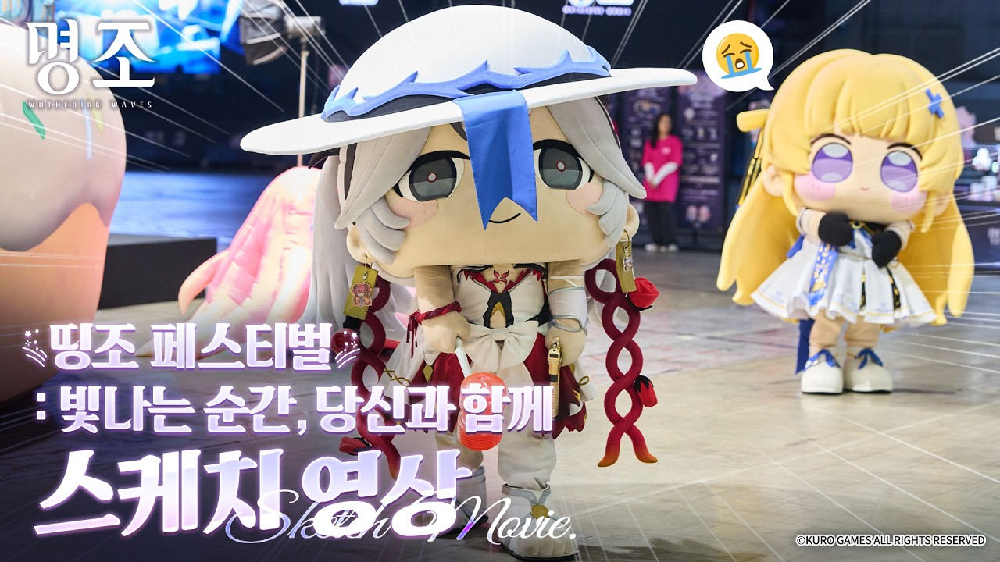
| 총 소요 | 약 100분 + 입퇴장 20분 = 120분 |
| 규모 | 3개관 × 300석 (로테이션 없이 전관 동시 진행) |
| 기술 요건 | 스크린 게임 화면 송출 · 관객 스마트폰 투표 시스템 · 무대 조명 · 무선 마이크 · 라이브 카메라 |
| 차별점 | 3.6의 로테이션 방식과 달리 전관 동일 프로그램 → 출연진 이동 시간 문제 해소, 운영 난이도 대폭 감소 |
상영관 안에만 머물지 않고, 극장 로비 전체를 명조 테마파크로 전환
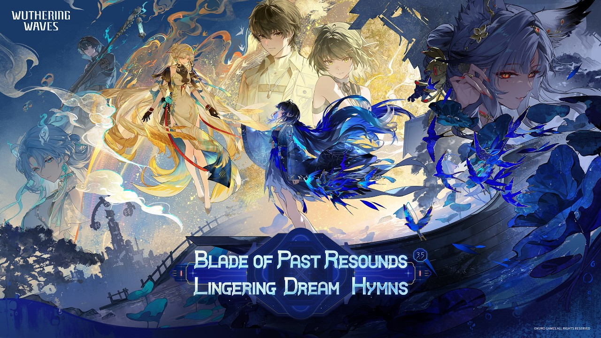
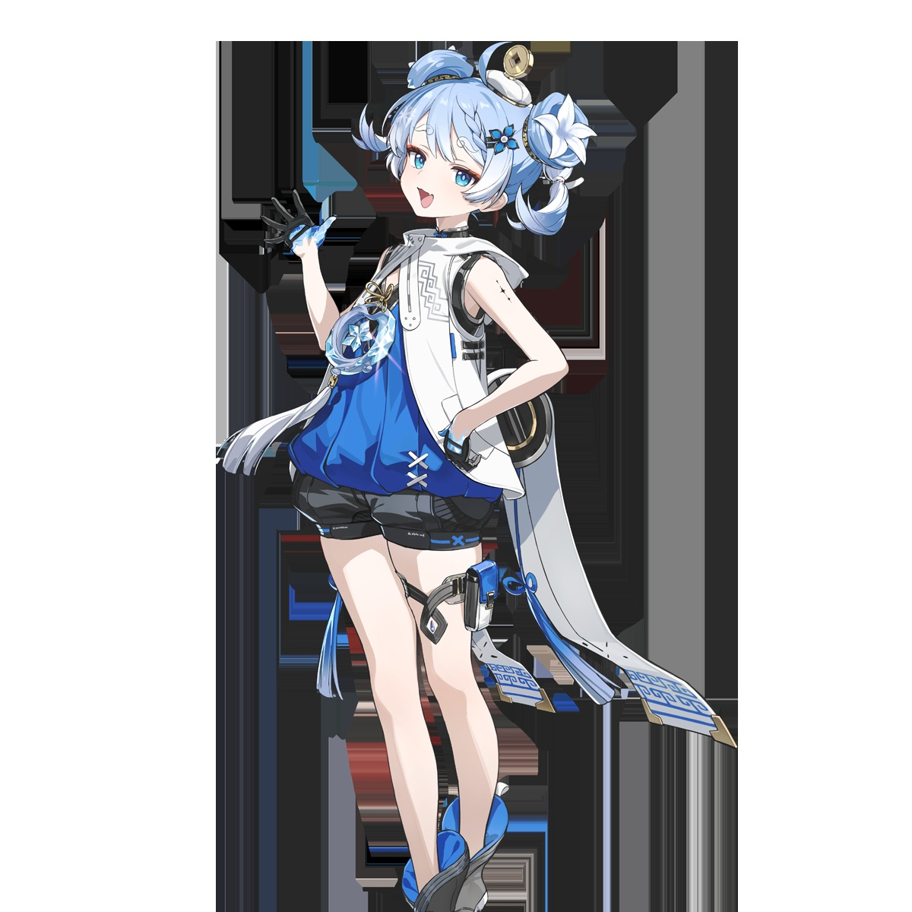
| 존 | 내용 | 비고 |
|---|---|---|
| 포토 존 | 여우의 별자리 · 쇄명 코스어 상시 대기 + 등신대 · 배경 세트 | 입퇴장 동선에 배치 |
| 인형탈 존 | 캐릭터 인형탈 미니 퍼포먼스 · 하이터치 | 2인 1조 교대 운영 |
| 체험 존 | 시연 PC 5~8대 — 3.7 신규 콘텐츠 직접 플레이 | 비유저 동반자 대상 |
| 드로잉 존 | 일러스트레이터 현장 드로잉 — 완성작 즉석 추첨 증정 | 3.7 드로잉 키친과 연계 |
| 굿즈 존 | 롯데시네마 콜라보 한정 굿즈 판매 · 웰컴기프트 수령 | 매출 발생 지점 |
| F&B 존 | 캐릭터 테마 팝콘 · 음료 세트 | 롯데시네마 협의 필요 |
KOL 파트와 롯데시네마 오프라인 파트를 하나의 흐름으로 합친 전체 배치안입니다.
3.6 → 3.7로 이어지는 콘텐츠 흐름. 공백기 없이 연결되도록 설계
| 버전 | 시점 | 콘텐츠 | 구분 | 목적 |
|---|---|---|---|---|
| 3.6 | D-DAY (업데이트 당일) | 애니메이션 리액션 | KOL | 버전 인지도 확산 · 당일 트래픽 집중 |
| 최우선 (복귀 직후) | 뜨뜨뜨뜨 전역 복귀 | KOL | 대형 채널 신규 노출 | |
| D+3 ~ D+7 | 영입회 | KOL | 신규 유입 전환 | |
| D+10 ~ D+14 | 성우 토크쇼 | KOL | 팬덤 만족 · 이탈 방어 | |
| D+14 ~ D+21 | 델크쇼 시즌2 | KOL | 신규 정착 · 밈 확산 | |
| 26/09/19 | 롯데시네마 단체관람 (before/after LIVE) | 오프라인 | 3.7 라이브 동시 관람 | |
| 3.7 | D-7 ~ D+3 | 너명해 (온라인 토크쇼) | KOL | 복귀 유저 재유입 |
| D+1 ~ D+7 | 흑조 주의보 (스텔라이브 클립) | KOL | 버추얼 팬덤 · 글로벌 확산 | |
| D+3 ~ D+10 | 띵조를 부탁해 (드로잉 키친) | KOL | 라이트 소구 · 굿즈 자산 | |
| D+10 ~ D+17 | 본사 방문 Vlog | KOL | 개발사 신뢰 · 장기 리텐션 | |
| 버전 중반 | 롯데시네마 시네마 아레나 (신규) | 오프라인 | 참여형 오프라인 경험 | |
| D+21 ~ | 띵킹2 (대회) | KOL | 공백기 방어 · 엔드콘텐츠 |
콘텐츠를 개별로 두지 않고 서로 연결하면 총 효과가 커지는 지점들
| 연계 | 내용 | 기대 효과 |
|---|---|---|
| 영입회 → 띵킹2 | 영입회 피영업자(예: 탬탬버린)를 띵킹2 킹티어로 캐스팅 | “영업당해서 대회까지 나온” 서사 완성 — 버전 간 스토리라인 연결 |
| 드로잉 키친 → 롯데시네마 | 온라인 드로잉 우승작을 현장 증정 굿즈로 제작 | 온라인 참여자가 오프라인 행사에 오는 동기 부여 |
| 성우 토크쇼 → 시네마 라이브 더빙 | 온라인 토크쇼 출연 성우가 극장 라이브 더빙쇼에 재출연 | 섭외 리소스 재활용 + “직접 보러 가는” 전환 유도 |
| 본사 방문 → 성우 토크쇼 | 본사 녹음실 탐방 장면과 성우 녹음 비하인드를 소재로 연결 | 제작 과정 서사의 일관성 확보 |
| 애니메이션 → 2차 창작 → 굿즈 | 애니 2차 창작 챌린지 우수작을 오프라인 전시 | 커뮤니티 기여자 인정 → 코어 팬덤 결속 |
| 롯데시네마 → 3.8 티저 | 현장 엔딩에서 차기 버전 티저 최초 공개 | 현장 반응이 그대로 온라인 화제성으로 전환 |
브레인스토밍 이후 실무 확정이 필요한 항목
| 항목 | 내용 | 리드타임 |
|---|---|---|
| 성우 섭외 | 소속사 스케줄 · 초상권/음원 사용 범위 · 재연 가능 대사 범위 | 6~8주 (최장) |
| 미공개 테이크 | 녹음 원본 공개 여부 — 개발사(쿠로) 승인 필수 | 4주 |
| 리액션 저작권 | 영상 사용 길이 · 화면 비율 · 수익화 정책 → 공식 가이드 1장 배포 | 2주 |
| 본사 방문 | 비자 · 촬영 허가 · 보안구역 구분 · 사전 질문 리스트 승인 | 6주 |
| 뜨뜨뜨뜨 컨택 | 전역 직후 스케줄 수용 여부 · 소속사/단가 — 복귀 버프는 단기간이라 선점 필요 | 즉시 |
| 스텔라이브 클립 저작권 | 예시 클립 5건 중 4건이 팬채널 소유 — 원본 권리자(스텔라이브) + 클립 제작자 양측 동의 필요 여부 법무 확인 | 4주 |
| 띵킹2 캐스팅 | 팀장/띵티어/킹티어 각 5~6인 확정 · 중계진 3인 스케줄 | 4주 |
| 단가 협의 | 기 확보 단가 — 다주 BDC 1,600만 / 서넹 500만 / 채현찌 1,000만 (VAT·거마비 별도) | — |
| 항목 | 내용 | 담당 |
|---|---|---|
| AFTER LIVE 축소 | 3개 프로그램 → 2개 축소 여부 결정 (인터미션·이동시간 초과 이슈) | 운영 |
| 사인회 규모 | 대상 인원 확정 (럭키드로우 당첨자 한정 권장) · 굿즈 사전 수량 | 운영 |
| 코스어/인형탈 | 대기실 · 탈의 공간 극장 내 확보 가능 여부 | 롯데시네마 협의 |
| F&B | 전용 F&B 판매 가능 여부 — 불가 시 웰컴기프트 먹거리 대체 | 롯데시네마 협의 |
| 촬영 정책 | 미공개 정보 포함 구간 촬영 제한 사전 고지 방안 | 운영 |
| 3.7 로비 사용 | B안 진행 시 로비 점유 허가 · 부스 설치 면적 (사전 답사 필수) | 롯데시네마 협의 |
| 투표 시스템 | A안 관객 스마트폰 실시간 투표 시스템 구축 (300명 × 3관 동시 부하) | 기술 |
출처 및 근거 자료
· [인챈트] 명조 제작 콘텐츠 기획안 (공유용) — 띵킹2 기획 내용
· 명조 롯데시네마 단체관람1 (라이브) 운영기획안 260724 — 3.6 오프라인 확정안
· 드로잉 쇼 「띵조를 부탁해」 진행안 (Google Docs)
· [인챈트] 명조: 워더링 웨이브 크리에이터 협업 콘텐츠 기획안 — 다주 본사 방문
· 영입회 레퍼런스: youtube.com/watch?v=J45wT1il29U (탬탬버린)
· 델크쇼 레퍼런스: youtube.com/watch?v=YxPgWtUWfKs (델롱락국)
· 성우 토크쇼 레퍼런스: youtu.be/E2whROUxDz8 (명조 2주년 페스티벌 성우 토크쇼 / 채널 블류)
· 띵킹 1회차: youtu.be/2b0mlTRKJjM (국내 최초 명조대회 「띵킹」 하이라이트 / 채널 명떡)
· 본사 방문 레퍼런스: youtu.be/PYZPlDI2Qh4 (쿠로게임즈 본사 초청 방문 후기 / 채널 박서림)
· 애니메이션: youtu.be/NH-NCf_SueU (애니메이션 시리즈 「엘리시움」 제작 확정 PV / 공식)
· 띵조 페스티벌: youtu.be/h-ac6EGYf6E (「빛나는 순간, 당신과 함께」 스케치 / 공식)
· 키비주얼 · 공명자 유후 일러스트: wutheringwaves.kurogames.com ©KURO GAMES
· 오프라인 부스: Wuthering Waves × Anime Expo 2026 하이라이트 (공식)
※ 본 문서 내 이미지는 기획 참고용 레퍼런스이며 각 저작권은 원 저작권자에 있습니다.